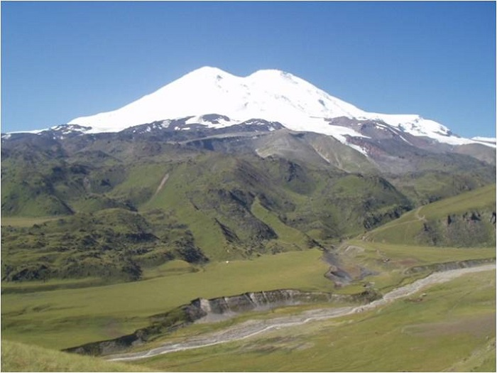
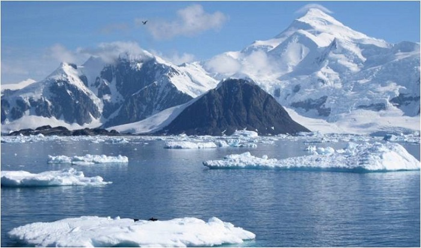

欧洲-厄尔布鲁士山

也许有不少人认为欧洲最高峰是阿尔卑斯山的白朗峰（海拔：4808m），那是因为在美苏冷战期间，欧洲人对于俄罗斯本土不是很了解，冷战结束后，大家发现，原来在俄罗斯境内的厄尔布鲁山才是欧洲的最高点。
厄尔布鲁士山由两座安山岩熔岩火山锥组成，西侧主峰海拔5642米，东侧辅峰海拔5595米，由于两座山峰一高一矮紧密相连，因此形成了厄尔布鲁士山独特的外形，从上图不难看出这是个“双峰巨人”。
厄尔布鲁士山自然景观独特，包括阔叶林，针叶林，亚高山和高山草甸，高山苔原，高山冰雪带。其周围有77条大小冰川，总面积达140平方公里。以大阿扎乌冰川和小阿扎乌冰川、捷尔斯科尔冰川最为典型。冰川融化，便形成了周围数以百计的溪流，很是壮观。。
南极洲-文森锋

在开始介绍文森锋之前，小爱想像大家科普一下南极。南极大陆是世界七大洲中最晚被发现，也是遭受认为破坏最少的地方。整个南极大陆都被冰层覆盖，南极大陆也是世界上平均海拔最高的大陆。可以说南极是世界上最干燥，寒冷，强风暴的地方。
文森锋正是坐落在这样恶劣的环境里。
文森锋是南极洲的最高点，也是极地中的极地，距离南极点只有600英里，异常寒冷。此峰是以致力于推动南极探险的美国国会议员卡尔•文森而命名的，大家是不是觉得叫南极峰更为贴切？文森峰海拔虽然不高，但在七大高峰里，它是最后一座被登顶的山峰。
文由于特殊的地理环境，文森锋大部分区域终年被冰雪覆盖且地势险要，因此被称为“死亡地带”。想要征服这座山峰，主要的敌人就是强风与超低温。一般在攀登季节平均温度约零下30摄氏度，历史上最低气温为零下88摄氏度。所以对于攀登者来说，应付超低温是最大的挑战。
如果你觉得这篇博客有趣而且对你有帮助，请分享给你的朋友， 让他们也一起涨姿势哦。